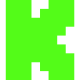

YOUR FRONT ROW

Your next stream.
Pick a streamer. Make yourself at home.
Find your favorites on Kick and save them here.
FIND YOUR PEOPLE
Search Kick
Enter an exact username to find their channel.
MAKE IT YOURS
Account & preferences
Watching as a guest
Your saved streamers stay on this TV. Kick sign-in is not available in this build.
Playback
Start quickly, then watch in HD. Quality adapts from 720p up to the creator’s source quality.
If HD is unavailable, the highest offered quality is used. The native TV player manages its own quality.
Remote shortcuts
Red turns the picture off while audio continues. Green reconnects playback and keeps your replay position. Use Back to leave the player.